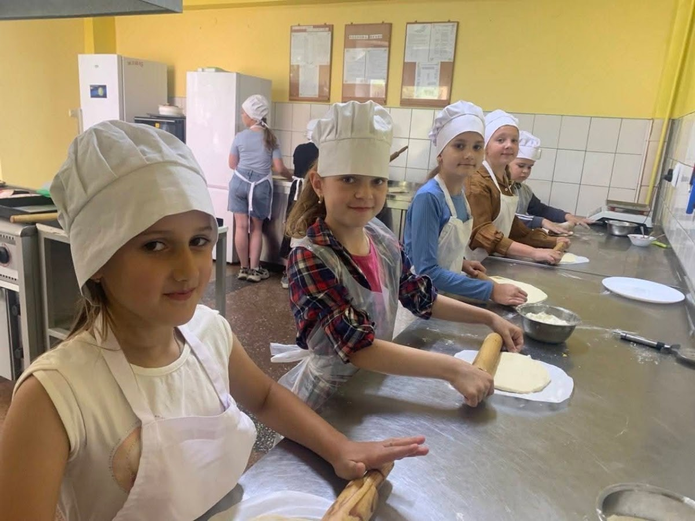

Реалізація освітніх програм, стандарти НУШ, підтримка обдарованої молоді, інклюзивна освіта та дистанційні ресурси.
Головна мета НУШ — створити школу, у якій приємно навчатись і яка дає учням не тільки знання, а й вміння застосовувати їх у реальному житті.

У закладі створено умови для здобуття якісної освіти дітьми з особливими освітніми потребами. Забезпечено психолого-педагогічний супровід та роботу асистентів вчителя.
Якісна підготовка випускників 9 класу до підсумкової атестації та успішного вступу до профільних ліцеїв, коледжів і закладів фахової передвищої освіти.
Офіційні освітні компоненти, модельні навчальні програми та регламенти.